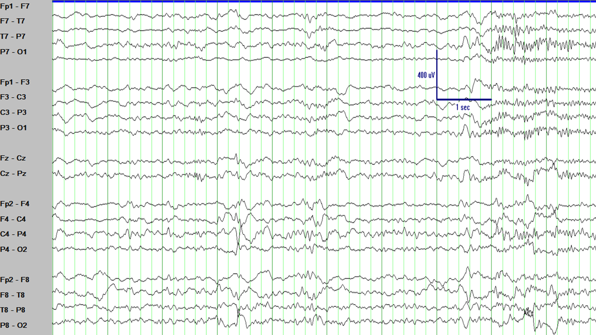
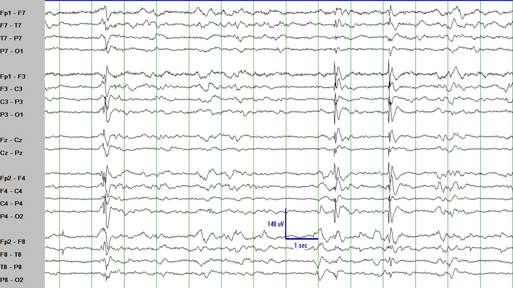
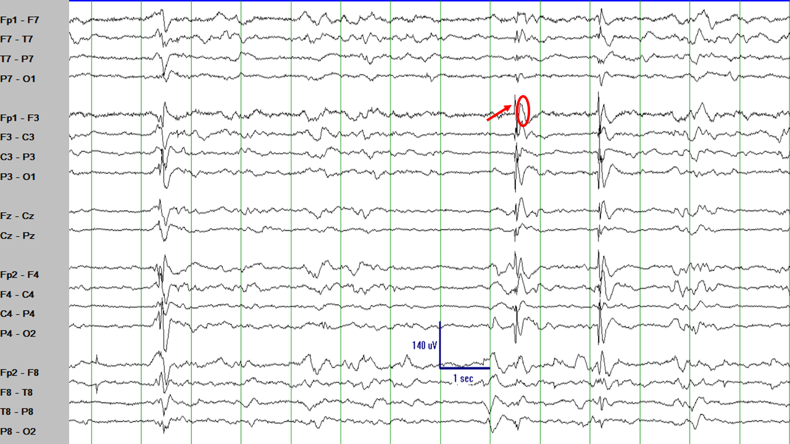
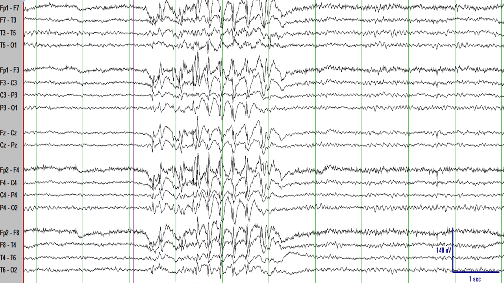
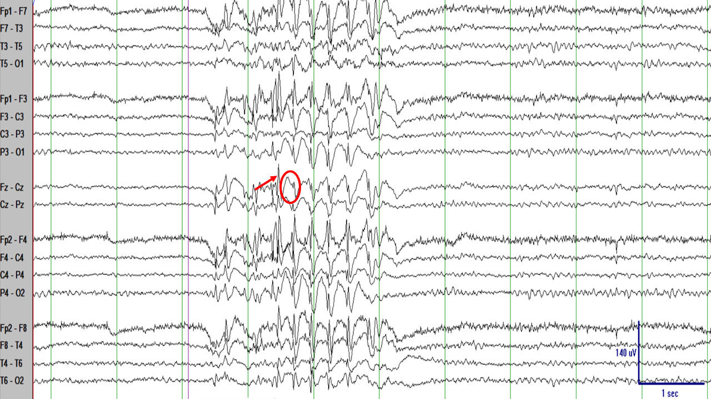
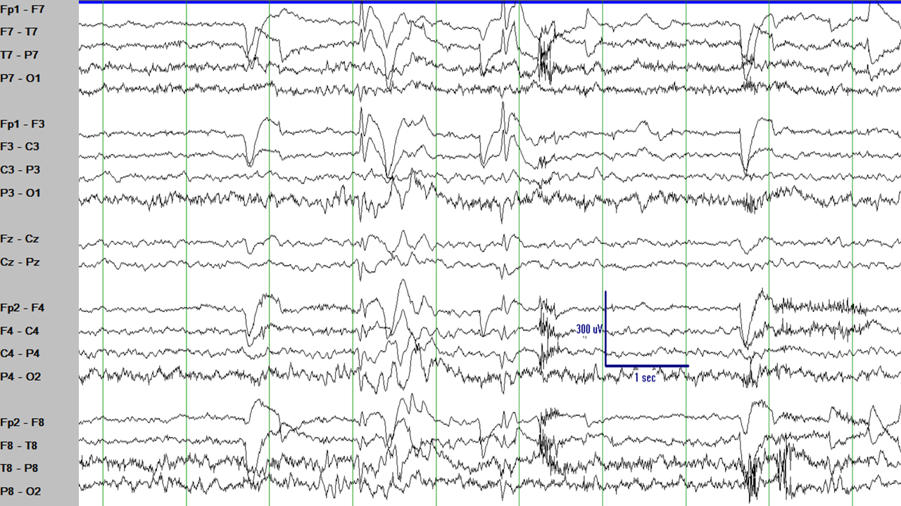
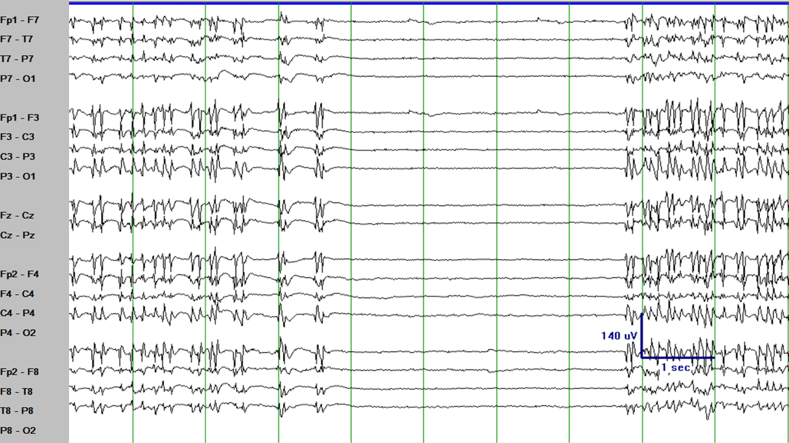
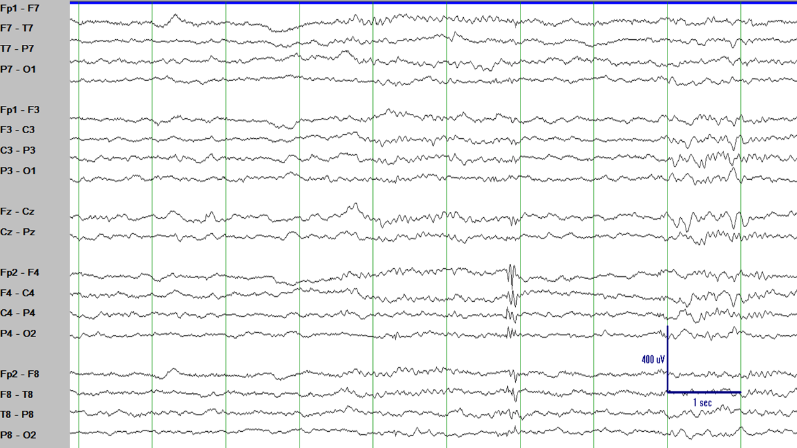
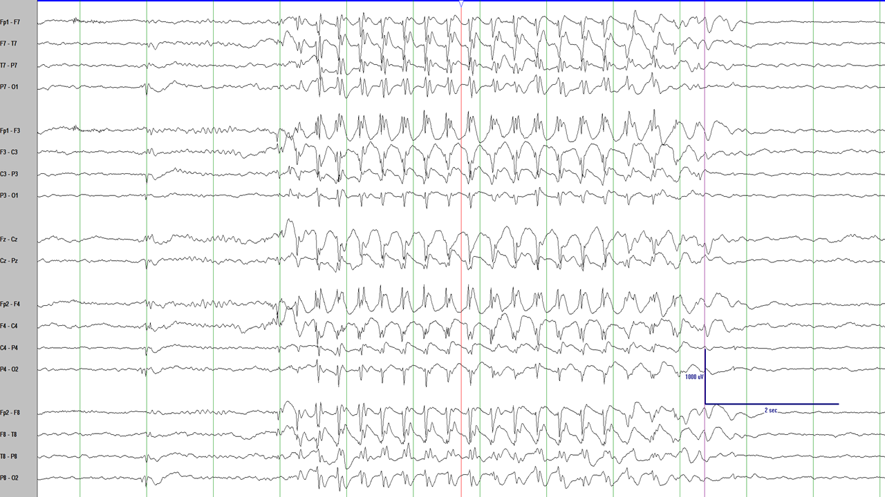
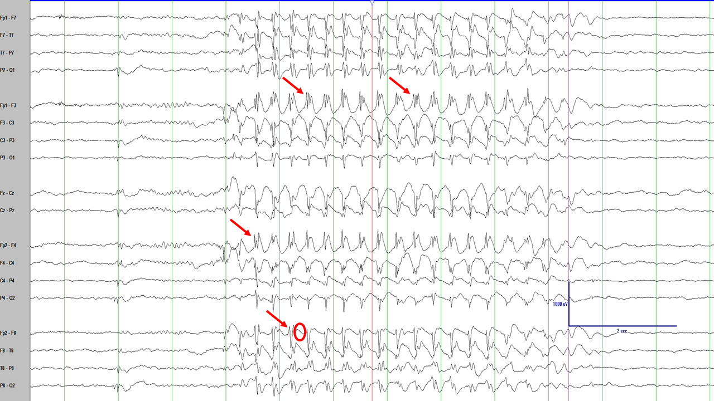

In this post you will learn the different types of epileptiform discharges.
SPIKES
A spike is a type of epileptiform discharge that has a duration of fewer than 70 milliseconds.
This is a spike at T8/P4 (in the inferior part of the image). It is a sharply-contoured
EEG element which breaks the rhythm, and has a field which makes anatomical sense. It is a spike because it is narrow
(shorter than 70 milliseconds).
SHARP WAVES
A sharp wave is similar to a spike, but wider, with a duration between 70 and 200 milliseconds.

This epileptiform discharge at P4/P8 is wider than 70 milliseconds, but narrower than
200 milliseconds: it is a sharp wave. For reference, the separation between green vertical lines
is 200 milliseconds.
There are multiple sharp waves in this EEG segment, with maximum at C3/P3, P7, and C4/P4.
SPIKE-WAVE COMPLEXES
A spike-wave complex is quite intuitive: imagine a spike followed by a slow wave. That is a spike-wave complex.

There are at least three epileptiform discharges in this EEG segment which clearly break the rhythm, are sharply
contoured, and affect most of the EEG channels (generalized field). Do you see the spike and then the aftergoing slow wave?

Same image as above highlighting a spike (red arrow) and its slow wave (red circle).

There is a burst of generalized spike-wave complexes in this EEG segment. Can you identify the spike and slow wave components?

Same image as above highlighting a spike (red arrow) and its slow wave (red circle).

Another example of spike-wave complexes which, in this case, are more irregular than in the prior examples.
POLYSPIKES AND POLYSPIKE-WAVE COMPLEXES
When a spike appears to have several phases it is termed a polyspike.

Some of the spikes appear separate from each other, but many of them appear to be a single discharge with several phases (a polyspike).
There is quite a a lot of subjectivity on deciding which spikes are individual spikes and which ones are polyspikes.

The epileptiform discharge with maximum at F4 has multiple phases and can be considered a polyspike.

An epileptiform discharge with several spikes followed by a slow wave is termed spike-wave complex.

Same figure as above highlighting the polyspike component (red arrows) and the wave component (red circle).
SUMMARY
It is good to become familiar with the major types of epileptiform discharges: spikes, sharp waves, spike-wave complexes,
polyspikes, and polyspike-wave complexes. You might have noticed that spikes and sharp waves are frequently focal or multifocal
while spike-wave complexes appear frequently as generalized epileptiform discharges. This is generally the case, but with
many exceptions. The type of epileptiform discharges and their distribution help identify the epileptic syndrome. And make
sure to use correct terminology and not that "sharp" nonsense! Things will get much more fun soon.